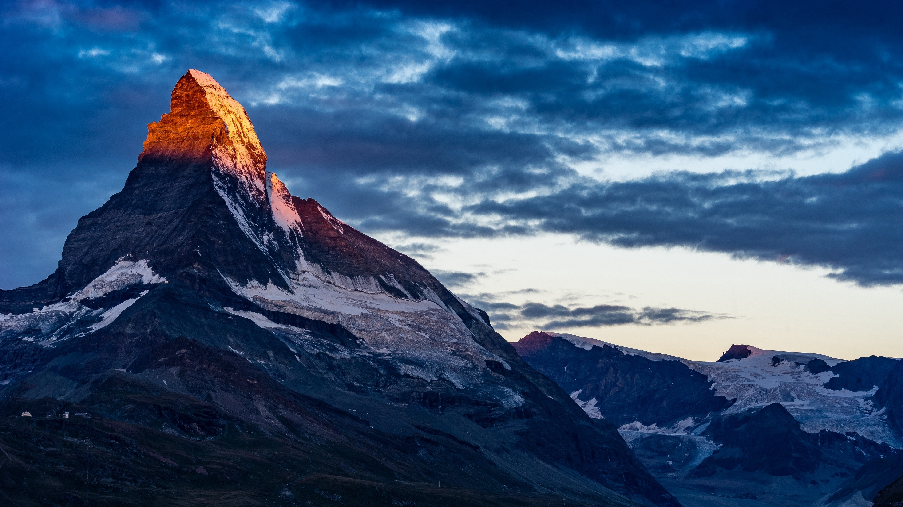
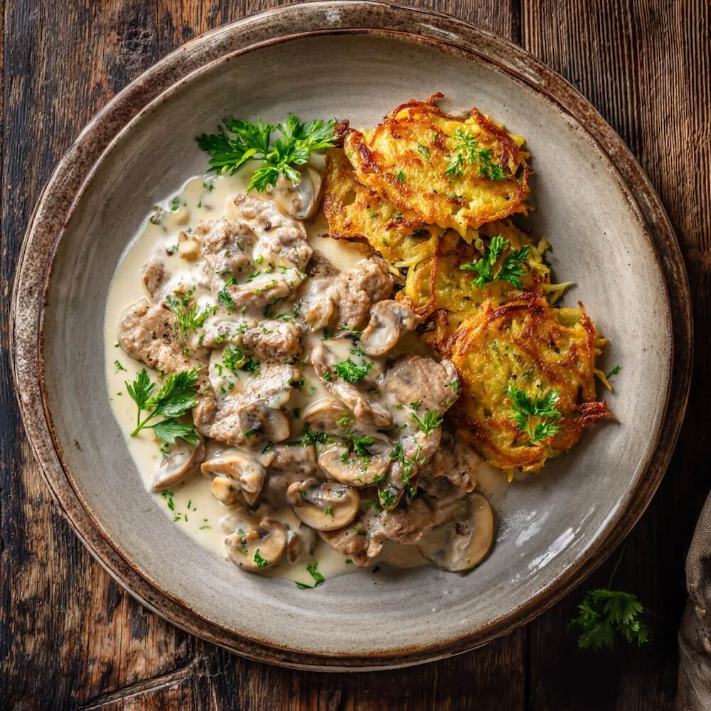

Explorar Suíça
Entre montanhas, lagos e cidades encantadoras, a Suíça oferece cenários que conquistam qualquer visitante.

Curiosidades da Suíça
A Suíça é aquele destino que parece ter saído de um cartão-postal. Pequena em tamanho, mas gigante em encantos, o país guarda curiosidades que conquistam qualquer viajante. Você sabia que lá se falam quatro idiomas oficiais? Alemão, francês, italiano e até o romanche, um idioma raro que sobrevive apenas em algumas regiões. O transporte também impressiona: os trens são tão pontuais que um atraso de dois minutos já vira motivo de reclamação! Além disso, a Suíça não tem um presidente fixo, mas sim sete conselheiros que se revezam no comando do país.
Outra curiosidade inusitada: por lei, não se pode ter apenas um porquinho-da-índia. Eles são animais sociáveis e precisam viver em dupla. Há até agências que ajudam a encontrar um novo companheiro caso um fique sozinho!
Aos domingos, barulho é quase um crime cultural. Cortar grama, furar paredes ou lavar o carro? Nem pensar! O dia é sagrado para o descanso e o silêncio.
E se você ama queijo, prepare-se: a Suíça tem mais de 450 tipos! Muitos deles podem ser degustados em rotas especiais pelos Alpes.

Pontos Turísticos
- Matterhorn (Zermatt): Uma das montanhas mais famosas do mundo.
- Jungfraujoch, Topo da Europa: Estação de trem mais alta do continente.
- Lago de Genebra: Vinícolas, castelos e Montreux.
- Interlaken: Esportes radicais como parapente e barco.
- Castelo de Chillon: Castelo medieval à beira do Lago de Genebra.
- Lugano: Charmosa cidade de língua italiana, conhecida pelo clima mediterrâneo e lagos cristalinos.
- Lucerna: Famosa pela Ponte da Capela e seu centro medieval à beira do lago.
- Zermatt: Vila alpina com ótimas opções de esqui e ruas livres de carros.
- Montreux: Cidade no Lago de Genebra, famosa pelo Festival de Jazz e belas paisagens.
- Bern: Capital da Suíça com centro histórico medieval e o relógio astronômico Zytglogge.

Comidas Típicas
- Älplermagronen: Massa com batata, queijo, cebola e creme.
- Zürcher Geschnetzeltes: Tiras de vitela ao molho cremoso.
- Chocolate suíço: Reconhecido mundialmente.
- Fondue de Queijo: Queijos derretidos com pão.
- Rösti: Batata ralada e frita, tipo uma panqueca crocante, muito popular no café da manhã.
- Raclette: Queijo derretido servido com batatas, picles e cebolinhas.
- Bircher Müesli: Mistura saudável de aveia, frutas, iogurte e nozes, típico no café da manhã.
- Saucisson Vaudois: Linguiça seca tradicional da região de Vaud, servida como aperitivo.
- Basler Läckerli: Biscoito tradicional feito com mel, nozes e frutas cristalizadas.
- Capuns: Folhas de acelga recheadas com carne, espinafre e especiarias, cozidas em caldo saboroso.